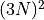
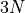
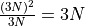
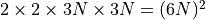
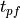
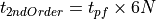
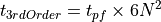
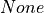
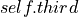
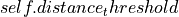

ForceConstants¶
The ForceConstants class creates objects that store the system information and load (or calculate) force constant matrices (IFCs) to be used by an instance of the Phonon class. This is normally the first thing you should initialize when working with kALDo and we’ll walk you through how to do that in the following sections on this page. Initializing a ForceConstants object will also initialize SecondOrder and ThirdOrder containers that you can access as attributes. Refer to the section on Loading Precalculated IFCs.
Calculating IFCs in kALDo¶
We use the finite difference approach, or sometimes called the frozen-phonon method. This method neglects temperature effects on phonon frequency and velocities, but it’s a good approximation if your system is far from melting (well-below the Debye Temperature).
The basic idea is we explicitly calculate the change in forces on atoms when they are displaced from their equilibrium and use this to approximate the true derivative of the potential energy at equilibrium. You should keep aim to keep the displacements small, but not so small that the potential you’re using can’t resolve the change in forces. On empirical potentials like Tersoff, you can try pretty small displacements (1e-5 Angstroms) but on more complex potentials like machine learning potentials you may need to use larger displacements (1e-3 Angstroms).
For a system with N atoms, the number of second order IFCs is  but, because each frame returns  forces, we only need to calculate  frames. However, the finite difference method uses 2 displacements (+/-) to approximate the derivative so total number is actually .
Each term of the third order FCs are calculated with 2 derivatives calculated with 2 displacements, so the total number of frames is .
Should I use kALDo to calculate my IFCs?¶
It’s faster to use compiled software like LAMMPS or Quantum Espresso to generate the IFCs when possible. However, if your system is small ( hundreds to a few thousand atoms ), it may be tractable to calculate them here. The following are some general cases where you could calculate it all here without a significant performance hit:
You want to explore the effect of different potentials on only harmonic phonon properties (so no third order needed).
Small systems with short ranges of interactions
Users have a custom potential (particularly when it can be calculated within python)
Systems have no symmetry (which many of the compiled software packages exploit to greatly reduce total calculations)
If you’re not sure, SecondOrder.calculate() prints to stdout the atom its currently working on so run the
calculation and stop it after it prints a few atoms. Take the average time per atom and divide by 6 to get the time per
frame  including overhead of I/O operations, launching tasks, etc. The total times are given by:


Calculation Workflow¶
Hint
Be sure to minimize the potential energy of your atomic positions before calculating the IFCs. The steps here assume you have already done this.
Import required packages which will be kALDo, the ASE calculator you want to use, and either a function to build atoms (like ase.build.bulk) or their read tool (ase.io.read):
from kaldo.forceconstants import ForceConstants from ase.io import read from ase.build import bulk from ase.calculatos.lammpslib import LAMMPSlib
Create your Atoms, Calculator and ForceConstants object. If you don’t set a “folder” argument for the ForceConstants object the default save location is “displacements”. See the ASE docs for information on their calculators:
# Create the Atoms object atoms = bulk('C', 'diamond', a=3.567) # Create the ASE calculator object calc = LAMMPSlib(lmpcmds=['pair_style tersoff', 'pair_coeff * * SiC.tersoff C'], parameters={'control': 'energy', 'log': 'none', 'pair': 'tersoff', 'mass': '1 12.01', 'boundary': 'p p p'}, files=['SiC.tersoff'])) # Create the ForceConstants object fc = ForceConstants(atoms, supercell=[3, 3, 3], folder='path_to_save_IFCS/',)
Now use the “calculate” methods of the second and third order objects by passing in the calculator as an argument. The “delta_shift” argument is how far the atoms move.:
# Second Order (for harmonic properties - phonon frequencies, velocities, heat capacity, etc.) fc.second.calculate(calc) # Third Order (for anharmonic properties - phonon lifetimes, thermal conductivity, etc.) fc.third.calculate(calc)
Try referencing the carbon diamond example to see an example where we use kALDo and ASE to control LAMMPS calculations.
Hint
Some libraries, like LAMMPS, can use either a python wrapper (LAMMPSlib) or a direct call to the binary executable (LAMMPSrun). We don’t notice a significant performance increase by using the direct call method, because the bottleneck is the I/O of data back to python. This is part of the reason our examples use the python wrapper, which offers more flexibility without losing access to the full LAMMPS functionality.
Loading Precalculated IFCs¶
Construct your ForceConstants object by using the from_folder method. The first step of
the amorphous silicon example can help you get started.
If you’d like to load IFCs into the already-created instances without the from_folder() generate the
ForceConstants object and then use the load() method of the SecondOrder and ThirdOrder objects to pull data as
needed.
Hint
If you just want to check harmonic data first, use the “is_harmonic” argument when creating the ForceConstants object to only load the second order IFCs. This can save considerable amounts of time if, for instance, you just need to generate a phonon dispersion along a new path.
Hint
TDEP with kaldo will only work for bulk materials (3D) materials
Input Files and Formats¶
Format |
Config filename |
ASE format |
2nd Order FCs |
3rd Order FCs |
|---|---|---|---|---|
numpy |
replicated_atoms.xyz |
xyz |
second.npy |
third.npz |
eskm |
CONFIG |
dlp4 |
Dyn.form |
THIRD |
lammps |
replicated_atoms.xyz |
xyz |
Dyn.form |
THIRD |
shengbte |
CONTROL [1] |
None [2] |
FORCE_CONSTANTS_2ND |
FORCE_CONSTANTS_3RD |
shengbte-qe |
CONTROL [1] |
None |
espresso.ifc2 |
FORCE_CONSTANTS_3RD |
hiphive |
atom_prim.xyz + replicated_atoms.xyz |
xyz |
model2.fcs |
model3.fcs |
tdep |
POSCAR/UCPOSCAR/SSPOSCAR |
xyz |
second.npy |
third.npz |
Notes on Formats
API Reference¶
- class kaldo.forceconstants.ForceConstants(atoms, supercell: tuple[int, int, int] | None = None, third_supercell: tuple[int, int, int] | None = None, folder: str | None = 'displacement', distance_threshold: float | None = None)[source]¶
A ForceConstants class object is used to create or load the second or third order force constant matrices as well as store information related to the geometry of the system.
- Parameters:
atoms (Tabulated xyz files or ASE Atoms object) – The atoms to work on.
supercell (tuple[int, int, int], optional) – Size of supercell given by the number of repetitions (l, m, n) of the small unit cell in each direction. Default: (1, 1, 1)
third_supercell (tuple[int, int, int], optional) – Same as supercell, but for the third order force constant matrix. If not provided, it’s copied from supercell. Default:
folder (str, optional) – Name to be used for the displacement information folder. Default: ‘displacement’
distance_threshold (float, optional) – If the distance between two atoms exceeds threshold, the interatomic force is ignored. Default: 
- n_atoms¶
Number of atoms in the unit cell
- Type:
int
- n_modes¶
The number of possible vibrational modes in the system from a lattice dynamics perspective. Equivalent to 3*n_atoms where the factor of 3 comes from the 3 Cartesian directions.
- Type:
int
- n_replicas¶
The number of repeated unit cells represented in the system. Equivalent to np.prod(supercell).
- Type:
int
- n_replicated_atoms¶
The number of atoms represented in the system. Equivalent to n_atoms * np.prod(supercell)
- Type:
int
- cell_inv¶
A 3x3 matrix which satisfies AB=I where A is the matrix of cell vectors, I is the identity matrix, and B is the cell_inv matrix.
- Type:
np.array(3, 3)
Methods
Return the stiffness tensor (aka elastic modulus tensor) of the system in GPa.
from_folder(folder[, supercell, format, ...])Create a finite difference object from a folder
sigma2_tdep_MD([fc_file, primitive_file, ...])Calculate the sigma2 value using TDEP and MD data.
unfold_third_order([reduced_third, ...])This method extrapolates a third order force constant matrix from a unit cell into a matrix for a larger supercell.
- classmethod from_folder(folder: str, supercell: tuple[int, int, int] = (1, 1, 1), format: str = 'numpy', third_energy_threshold: float = 0.0, third_supercell: tuple[int, int, int] | None = None, is_acoustic_sum: bool = False, only_second: bool = False, distance_threshold: float | None = None)[source]¶
Create a finite difference object from a folder
The folder should contain the a set of files whose names and contents are dependent on the “format” parameter. Below is the list required for each format (also found in the api_forceconstants documentation if you prefer to read it with nicer formatting and explanations).
numpy: replicated_atoms.xyz, second.npy, third.npz eskm: CONFIG, replicated_atoms.xyz, Dyn.form, THIRD lammps: replicated_atoms.xyz, Dyn.form, THIRD shengbte: CONTROL, POSCAR, FORCE_CONSTANTS_2ND/FORCE_CONSTANTS, FORCE_CONSTANTS_3RD shengbte-qe: CONTROL, POSCAR, espresso.ifc2, FORCE_CONSTANTS_3RD hiphive: atom_prim.xyz, replicated_atoms.xyz, model2.fcs, model3.fcs
- Parameters:
folder (str) – Chosen folder to load in system information.
supercell ((int, int, int), optional) – Number of unit cells in each cartesian direction replicated to form the input structure. Default is (1, 1, 1)
format ('numpy', 'eskm', 'lammps', 'shengbte', 'shengbte-qe', 'hiphive') – Format of force constant information being loaded into ForceConstants object. Default is ‘numpy’
third_energy_threshold (float, optional) – When importing sparse third order force constant matrices, energies below the threshold value in magnitude are ignored. Units: eV/Angstrom^3 Default is
distance_threshold (float, optional) – When calculating force constants, contributions from atoms further than the distance threshold will be ignored.
third_supercell ((int, int, int), optional) – Takes in the unit cell for the third order force constant matrix. Default is self.supercell
is_acoustic_sum (Bool, optional) – If true, the acoustic sum rule is applied to the dynamical matrix. Default is False
- Returns:
forceconstants – A new instance of the ForceConstants class
- Return type:
ForceConstants object
- unfold_third_order(reduced_third=None, distance_threshold=None)[source]¶
This method extrapolates a third order force constant matrix from a unit cell into a matrix for a larger supercell.
- Parameters:
reduced_third (array, optional) – The third order force constant matrix. Default is 
distance_threshold (float, optional) – When calculating force constants, contributions from atoms further than the distance threshold will be ignored. Default is 
- elastic_prop()[source]¶
Return the stiffness tensor (aka elastic modulus tensor) of the system in GPa. This describes the stress-strain relationship of the material and can sometimes be used as a loose predictor for thermal conductivity. Requires the dynamical matrix to be loaded or calculated.
- Parameters:
None –
- Returns:
C_ijkl – Elasticity tensor in GPa
- Return type:
np.array(3, 3, 3, 3)
- static sigma2_tdep_MD(fc_file: str = 'infile.forceconstant', primitive_file: str = 'infile.ucposcar', supercell_file: str = 'infile.ssposcar', md_run: str = 'dump.xyz') float[source]¶
Calculate the sigma2 value using TDEP and MD data.
- Parameters:
fc_file (str, optional) – Path to the force constant file. Default is ‘infile.forceconstant’.
primitive_file (str, optional) – Path to the primitive cell file. Default is ‘infile.ucposcar’.
supercell_file (str, optional) – Path to the supercell file. Default is ‘infile.ssposcar’.
md_run (str, optional) – Path to the MD trajectory file. Default is ‘dump.xyz’.
- Returns:
The average sigma2 value.
- Return type:
float